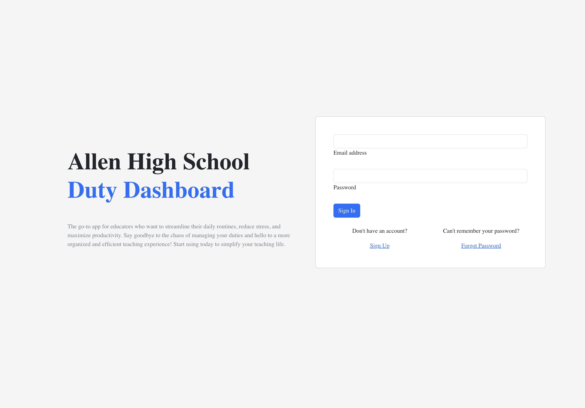
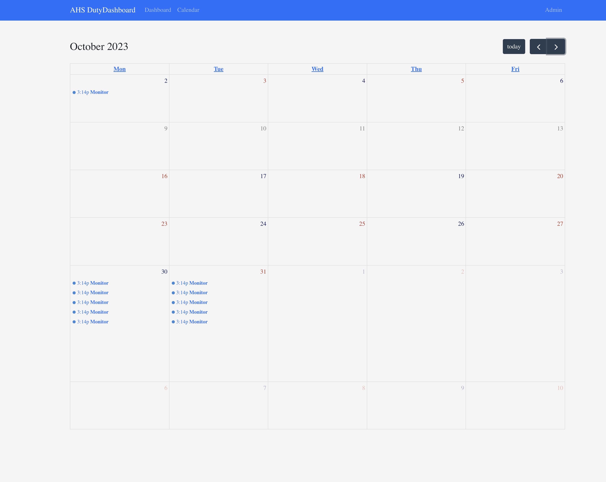
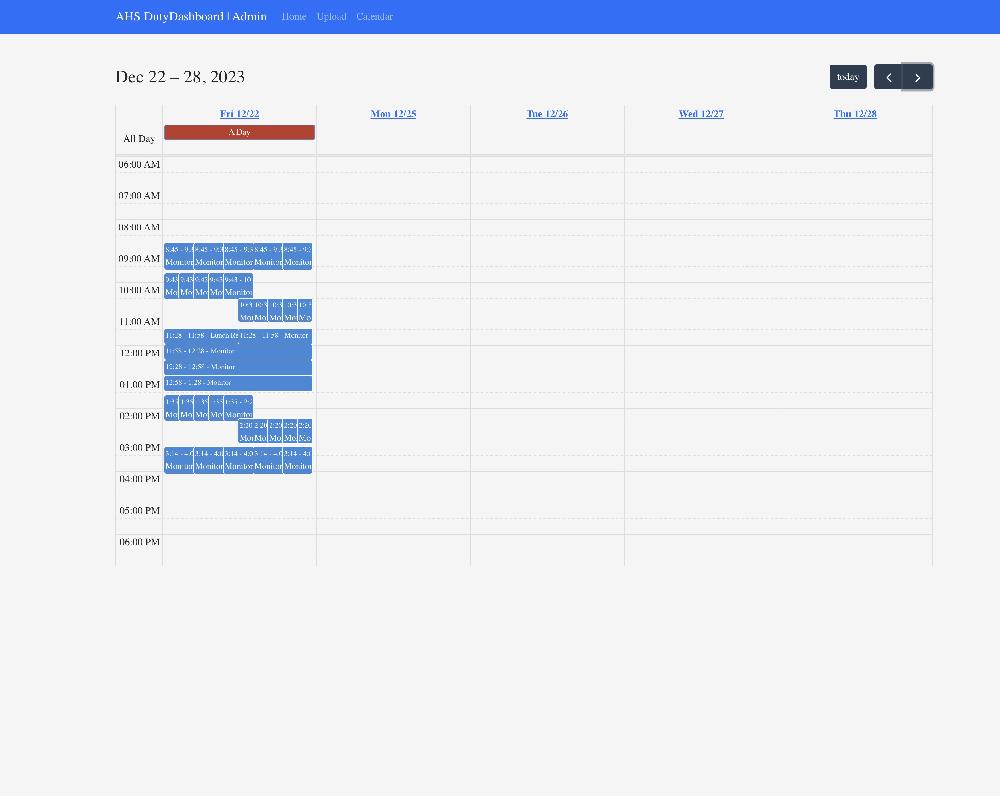

In the dynamic world of education, effective organization and communication are essential for success. Introducing the Teacher Duty Application, a powerful tool designed to streamline duty assignment processes and empower educators to take control of their responsibilities. With features tailored for both teachers and administrators, our platform revolutionizes how schools manage duty assignments and foster collaboration among faculty members.
Key Features:
Teacher Login Portal:
Our application features a secure login portal that allows teachers to access their duty assignments from any device.
Through personalized accounts, educators can view their assigned duties and make changes as needed, ensuring flexibility and convenience.

Duty Assignment Management:
Teachers can view their assigned duties, including supervision, monitoring, and other responsibilities, through an intuitive dashboard.
With the ability to choose their own duties from available shifts, educators have the autonomy to customize their schedules according to their preferences and availability.

Administrative Control Panel:
Administrators have access to a comprehensive control panel where they can manage user accounts and duty assignments.
From modifying user information to adjusting duty shifts, administrators have the tools they need to oversee duty management with ease.

Conclusion:
Built on a foundation of reliability and usability, our Teacher Duty Application leverages cutting-edge technology to deliver a seamless user experience. With intuitive navigation and responsive design, our platform ensures accessibility and efficiency for educators and administrators alike.
Join us in revolutionizing duty assignment processes with the Teacher Duty Application. By providing educators with the tools they need to manage their responsibilities effectively, we're empowering teachers to focus on what they do best: educating the next generation. Experience the power of organization and collaboration as we redefine how schools manage duty assignments and foster a culture of accountability and engagement among faculty members.